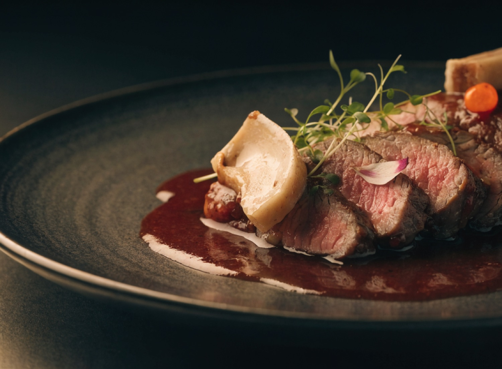
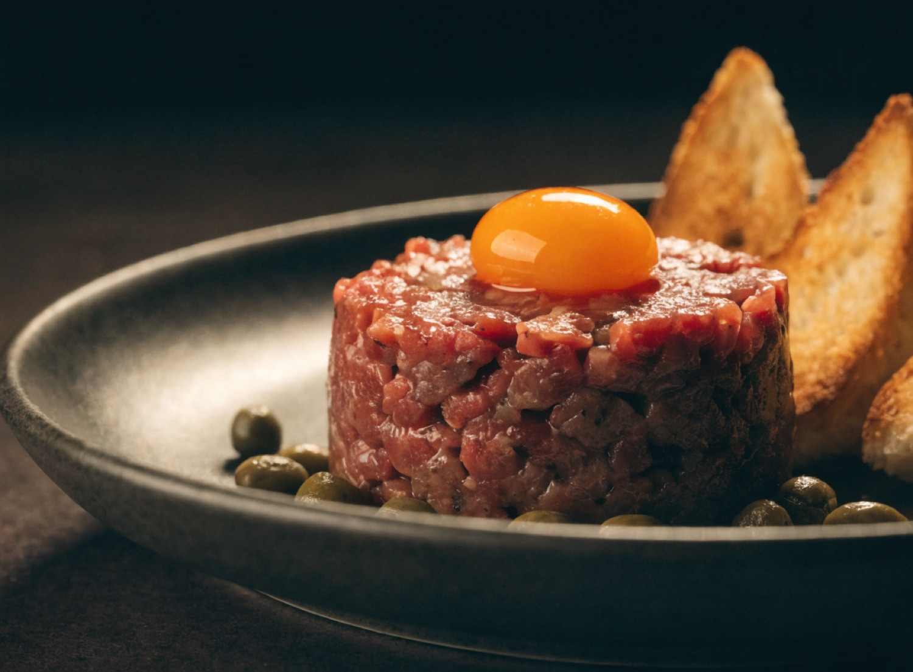
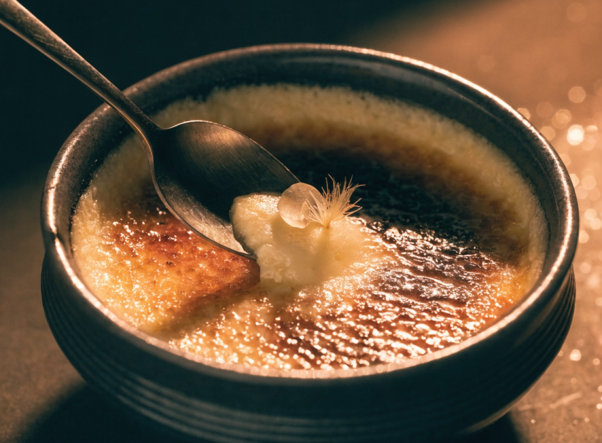

Assinaturas da casa

Entrecôte à bordelaise
Molho de vinho tinto, tutano assado e flor de sal.
R$ 118

Steak tartare
Na faca, gema curada e torradas de campanha.
R$ 64

Ancho maturado 45 dias
350g na brasa, manteiga de ossos.
R$ 129

Crème brûlée
Baunilha de Madagascar, açúcar queimado na hora.
R$ 36